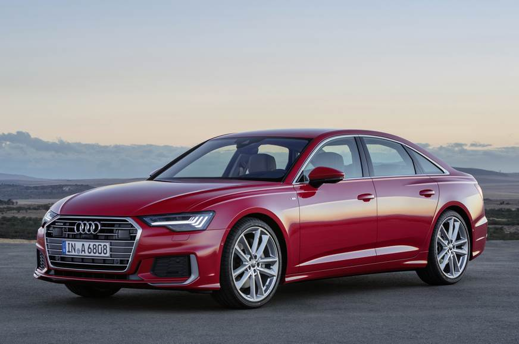
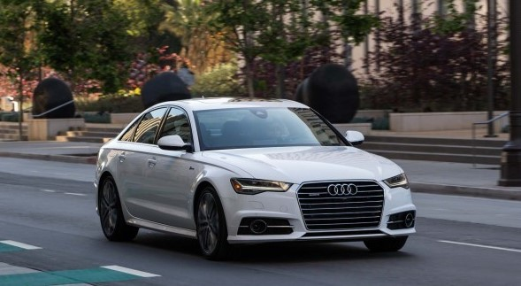

AUDI A6 2018
Innovative technologies, progressive design, and exciting versatile equipment options: The Audi A6 Sedan combines these values into an exceptionally sporty and elegant symbiosis. Elegant and progressive at the same time, this versatility and comfort open up a new kind of mobility.
REVIEW
The 2018 Audi A6 is a conservatively styled, but handsome mid-size luxury sedan. It lacks the bells and whistles others now offers, but holds firm to its foundation as a competent performer.
The automaker has only shuffled packages to offer more features at a lower price. Navigation and keyless ignition are standard on all models. The A6 is available in Premium, Premium Plus, and Prestige trims with varying levels of creature comforts.
The A6’s small secret is that it’s mechanically related to the A7, which drastically improves on the A6’s conservative style. The good news is that stepping into an A7 requires more than $70,000, and that high price carves a better hole for entry A6 buyers who don’t want to look over their shoulders.
The A6 excels in safety and features, which is how we arrive at its high score.

Styling
If understated is a style, the 2018 Audi A6 has it in spades. The handsome sedan has aged, but has mostly avoided looking dated.The A6’s exterior hasn’t changed for a few years now, only adding LED headlights and lashings of chrome in a slow, steady march to today’s appearance. It’s handsome and subtle; the most expressive element perhaps is the corporate trapezoidal grille.Inside, the cockpit is busy, but precise. It’s smartly trimmed in a wide number of materials, but subtle hues keep the interior from looking too busy.Compared to the newer Audi A4, the older A6 shows its age. When the A6 is taken alone, it’s perfectly fine.
A low, slim dash hides a pop-up screen and we actually prefer it to the newer Audis fitted with a fixed screen. The permanent fixture in newer models has a bolted-on look that we just can’t get behind.
Performance
Only front-drive models of the A6 get a 7-speed automatic that is admirable in its proficiency. It’s a dual-clutch automatic, so upshifts are rapid-fire fast, but it’s built for efficiency.An optional supercharged 3.0-liter V-6 is rated at 340 hp and features mostly the same running gear as turbo-4 versions. It's found in 3.0T versions of Premium Plus trims and standard on Prestige versions of the A6.
The A6 is adept in its handling in every model, but not necessarily inspired. In our drives of numerous versions of the A6, we’ve found it to be competent but also lacking direct feedback that we’d expect—especially with more power. That’s not hugely surprising considering sporty drives are the direct purview of the more powerful S6, but we would have appreciated a little trickle-down.
The available Competition package adds a sport-oriented rear limited slip differential that we’ve enjoyed on other models.

Comfort & Quality
The 2018 Audi A6 is a luxury mid-sizer with room for four, or five in a pinch, and a useable trunk. It’s closely related to the A7, which has similar dimensions, but a fastback shape that’s better looking.
The front seats of the A6 are spacious and comfortable with plenty of head room for various body types. Leg room may be an issue for taller drivers because the center tunnel is quite wide.The front seats also get a shout out: the headrests are comfortable without intruding on our space, a common problem with newer active headrests.
In back, 6-footers can fit behind other 6-footers, although rear-seat passengers may have their knees pitched against the seats.The rear seats fold down, but not completely flat. That helps the somewhat skimpy trunk, which only holds 14.1 cubic feet of cargo with the seats up.
Features
The 2018 Audi A6 makes sportier looks available on more models and navigation is now standard. All good things we say.
Every A6 model includes a sunroof, power-adjustable front seats, tri-zone climate controls, 18-inch wheels, leather upholstery, a 7.0-inch LCD screen for infotainment, and heated front seats.Audi's Multi-Media Interface (MMI) infotainment system is also standard equipment. MMI's menus have been streamlined over the years and the shortcut buttons are a welcome relief, but the system can still be hard to learn and take hours to figure out.
While there’s no touchscreen, there's a touchpad called MMI Touch that allows some secondary input, including acting as preset buttons for the audio system, and as a Palm Pilot-style scratch pad, on which the driver can write out letters with their fingertip to enter destinations or choose contacts from the phone book.